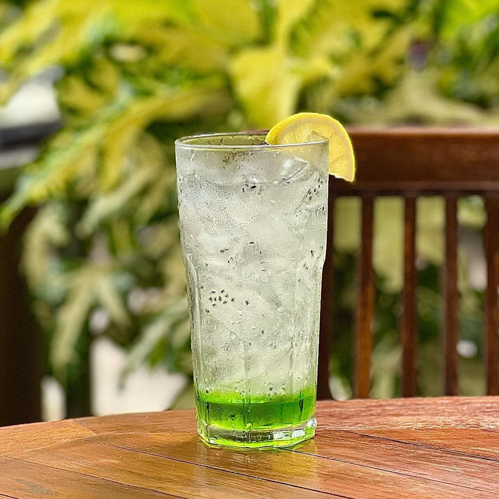
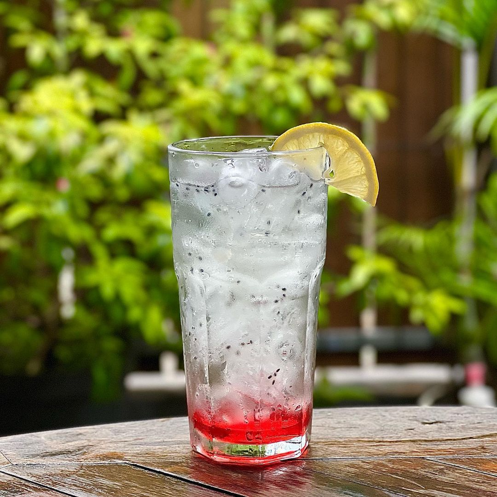
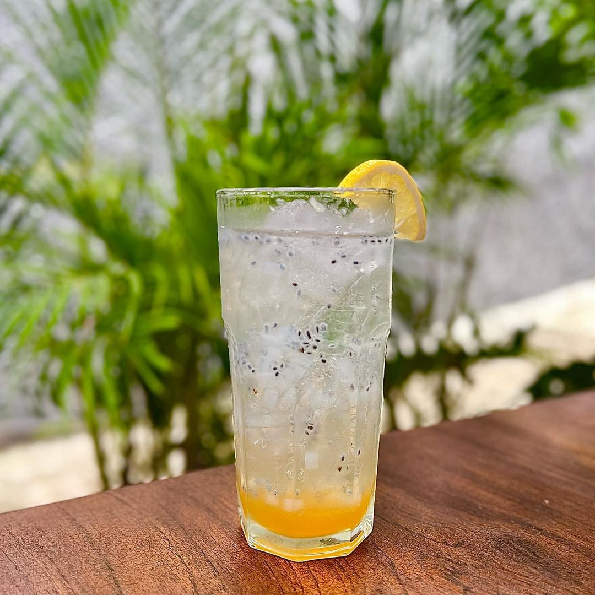
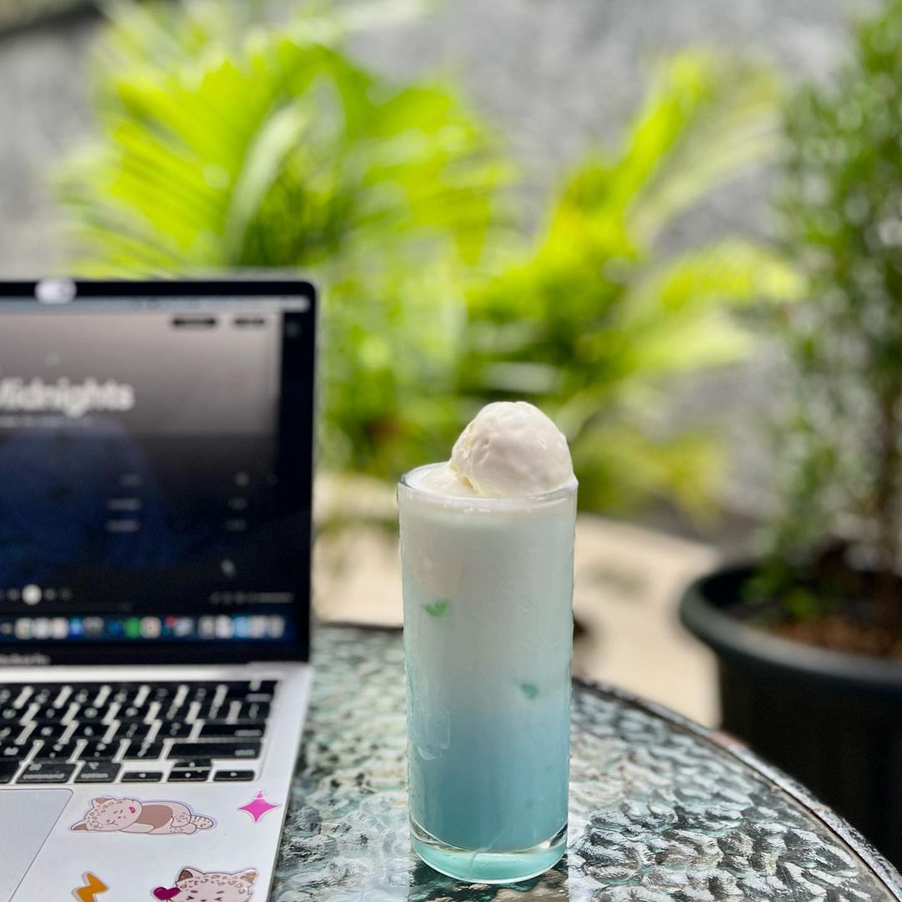
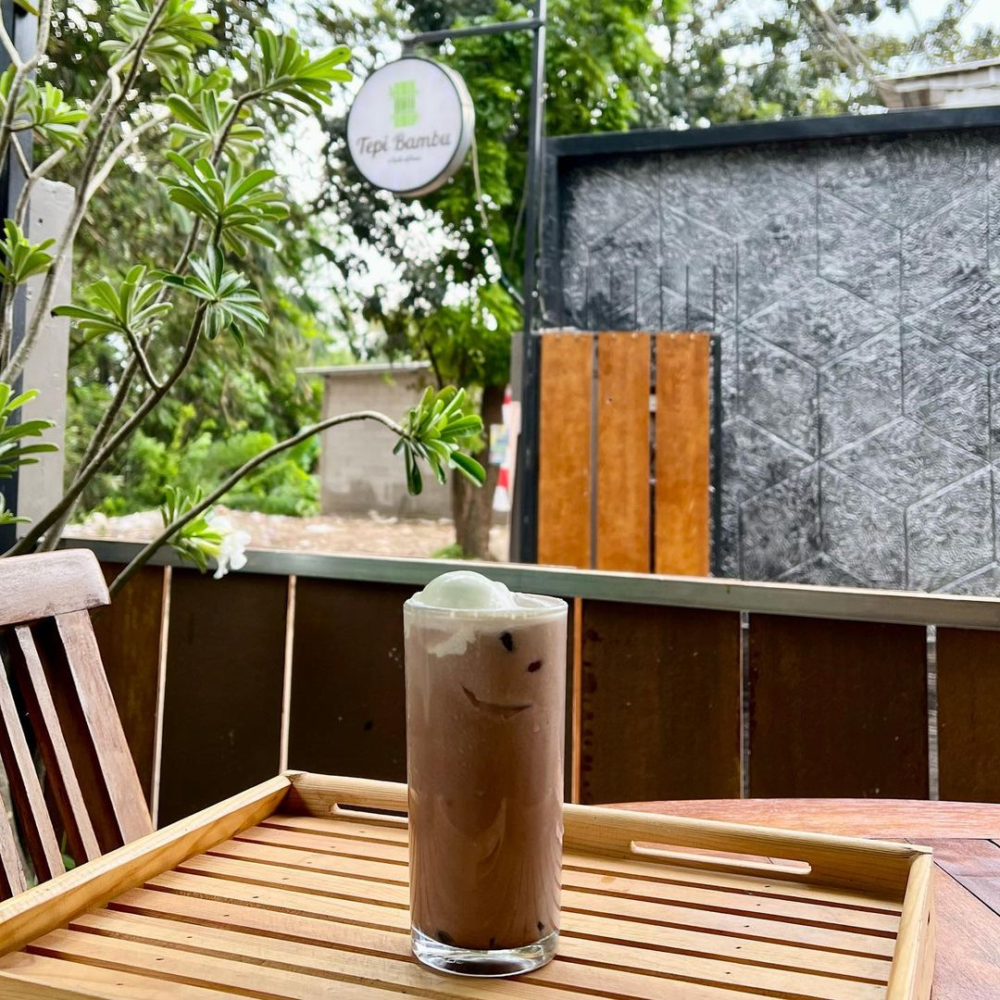

Tepi Bambu
Cafe
Home
Menu
Pesan
Maps
0
Tepi Bambu Cafe
Bersantai di cafe dengan menikmati seduhan kopi yang sangat kental akan nostalgia kehidupan
MENU
Best Seller

Ice Melon Squash
Ice melon squash adalah minuman yang segar dan menyegarkan. Ini terbuat dari perasan melon yang dicampur dengan es dan gula. Rasanya manis dengan sentuhan rasa melon yang khas. Biasanya disajikan dalam bentuk dingin dengan es serut untuk memberikan sensasi kesegaran yang sempurna, terutama di cuaca panas.

Ice Mixed Fruit Squash
Ice mixed fruit squash adalah minuman penyegar yang terbuat dari campuran berbagai buah-buahan. Biasanya, minuman ini terdiri dari perasan buah-buahan seperti jeruk, ceri, apel, dan buah-buahan lainnya yang memberikan rasa manis dan asam yang seimbang.

Ice Markisa Squash
Ice Markisa squash adalah minuman yang terbuat dari perasan buah markisa atau passion fruit. Minuman ini memiliki rasa yang unik, dengan kombinasi manis dan asam yang khas dari buah markisa. Biasanya, gula atau sirup ditambahkan ke dalam perasan markisa untuk memberikan rasa manis yang lebih kuat.

Ice Bubble Gum Float
Ice Bubble Gum Float adalah minuman yang menyegarkan dengan sentuhan rasa permen karet. Minuman ini biasanya terdiri dari soda krim atau soda vanila yang ditambahkan dengan es krim rasa permen karet, seringkali juga dihiasi dengan permen karet asli atau taburan gula-gula warna-warni. Rasanya sangat manis dan mengingatkan pada rasa permen karet yang lezat.

Ice Bubble Choco
Ice Bubble Choco adalah minuman yang nikmat dengan rasa cokelat yang lezat. Biasanya disajikan dalam gelas besar atau cangkir, sehingga Anda dapat menikmati sensasi melelehnya susu cokelat yang menyegarkan bersama dengan rasa kenyal dan manis dari gelembung-gelembung tersebut. Ini adalah minuman yang populer di kalangan pecinta cokelat dan minuman bubble tea.
Pesanan
0
Tutup
Maps
Tepi Bambu Cafe